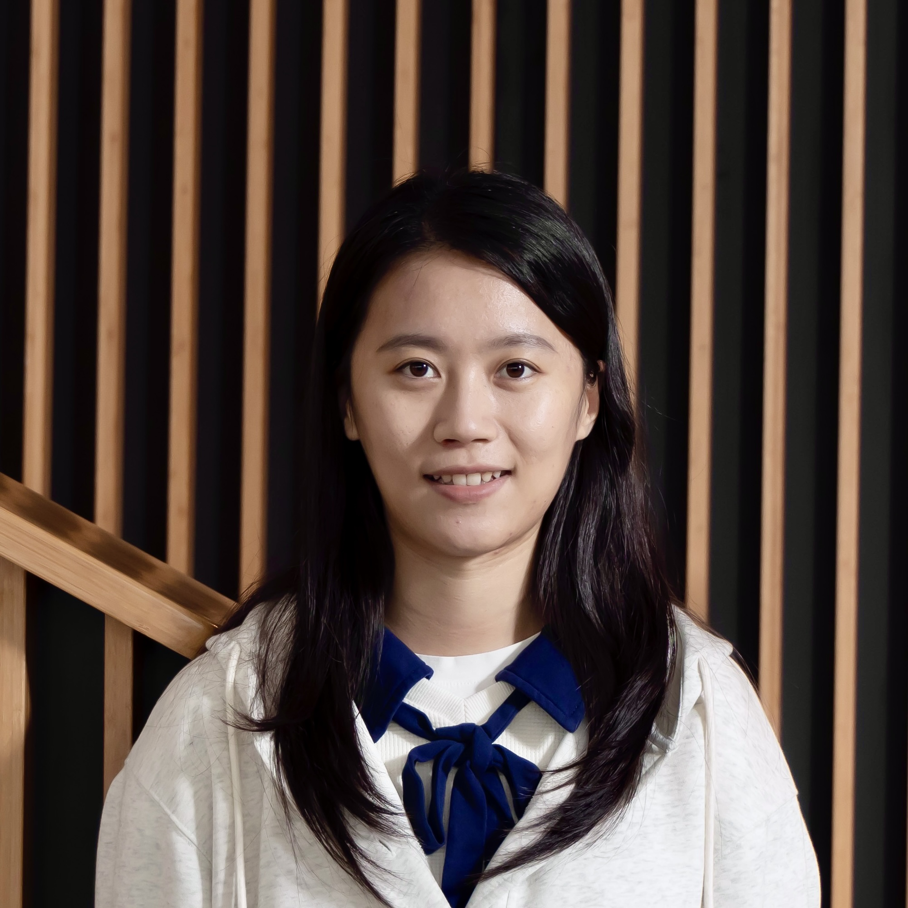
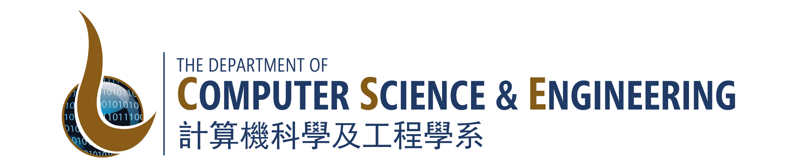

Wenxue Li
|
 |
Researcher 

|
 |
About Me
Hi, I am Wenxue Li. I received my Ph.D. in Computer Science and Engineering from Hong Kong University of Science and Technology (HKUST) in 2026, where I was fortunate to be advised by Prof. Kai Chen. Before that, I received my B.E. in Electronic Science and Technology from Zhejiang University in 2021. My research interests lie broadly in datacenter networking and distributed systems, with a particular focus on network protocols, high-speed networking, and networked systems for AI. Feel free to reach out if you are interested in my work.
News
Jul. 2026 Pyxis accepted to NSDI 2027.
Jul. 2026 DCP accepted to IEEE/ACM Transactions on Networking.
Jun. 2026 FLB accepted to IEEE/ACM Transactions on Networking.
Apr. 2026 FCP accepted to SoCC 2026.
Apr. 2026 Invited to serve on INFOCOM 2027 TPC. Welcome to submit.
Mar. 2026 Invited as a PG graduate speaker in HKUST CSE RTF 2026.
Jan. 2026 Themis accepted to EuroSys 2026.
Dec. 2025 PolicyCache accepted to NSDI 2026.
Sep. 2025 DCP awarded SIGCOMM'25 Best Student Paper Award Honorable Mention!
Aug. 2025 LTP and MFS accepted to EuroSys 2026.
Aug. 2025 Cepheus accepted to IEEE/ACM Transactions on Networking.
Apr. 2025 DCP, CEIO and MixNet accepted to SIGCOMM 2025.
Apr. 2025 FLB accepted to ATC 2025.
Apr. 2025 Themis and MCC accepted to APNet 2025.
Mar. 2025 FuseLink accepted to OSDI 2025.
May 2024 FlowSail accepted to IEEE/ACM Transactions on Networking.
Apr. 2024 Understanding AI workloads accepted to APNet 2024.
Oct. 2023 Cepheus accepted to HPCA 2024.
July 2023 FlowSail accepted to ICNP 2023.
July 2022 SRNIC accepted to NSDI 2023.
Experiences
Software Engineer Intern @ ByteDance, Hangzhou, China (July 2020 - June 2021)
Honors
SIGCOMM'25 Best Student Paper Award Honorable Mention
SIGCOMM 2025 N2Women Travel Grants (2025)
ATC 2025 Travel Grants (2025)
HPCA 2024 Travel Grants (2024)
HKUST Research Travel Grants (2023 Fall, 2024 Spring, 2024 Summer)
HKUST Postgraduate Studentship (2021-2025)
First-class Scholarship, ZJU (2019)
Zhejiang Daily - Alibaba New Media Scholarship, ZJU (2019)
Outstanding Student Leader, ZJU (2018)
|
|